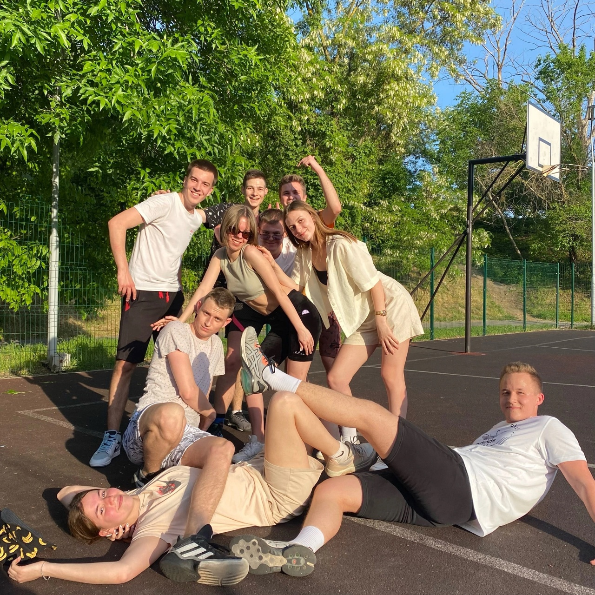

Привет! Меня зовут Дана. Мне 21 год. Я родилась в городе Донецк (Ростовская обл.),
на данный момент проживаю в Таганроге. Учусь в Южном Федеральном Университете
в институте ИКТИБ, кафедра МОП ЭВМ, направление "Программная инженерия".
Люблю себя и свою кошку.
Я люблю ездить в разные интересные места, особенно в горы. Также мне
нравится готовить вкусные блюда, кушать и спать. В будущем я планирую работать
программистом, быть счастливой женой и мамой, а затем бабушкой. Моя мечта -
жить в мире, где люди ходят только в розовых crocs.
Всю жизнь я занималась спортом. В 5 лет пошла на спортивную гимнастику. После
переезда пошла на синхронное плавание, и с 7 до 18 лет занималась. После поступления
в университет времени стало меньше, однако сейчас я хожу в зал и в теплое время года
играю в баскетбол.
Achievement
В 17 лет, занимаясь синхронным плаванием, я выполнила
программу и получила разряд "Мастер спорта России"
Я закончила 11 классов, написала ЕГЭ на 280 баллов, поступила
в ЮФУ. На данный момент учусь на 3 курсе и работаю.

Всю жизнь я развивалась в психологическом
и социальном плане. У меня много хороших друзей, знакомых, и я счастлива.
My kitty
Это моя самая кошка Ласка. Она родилась 1 января 2015 года.
Её порода - тайская, blue point. Ласка самая красивая
и великолепная косечка. Она моё самое любимое существо в мире.